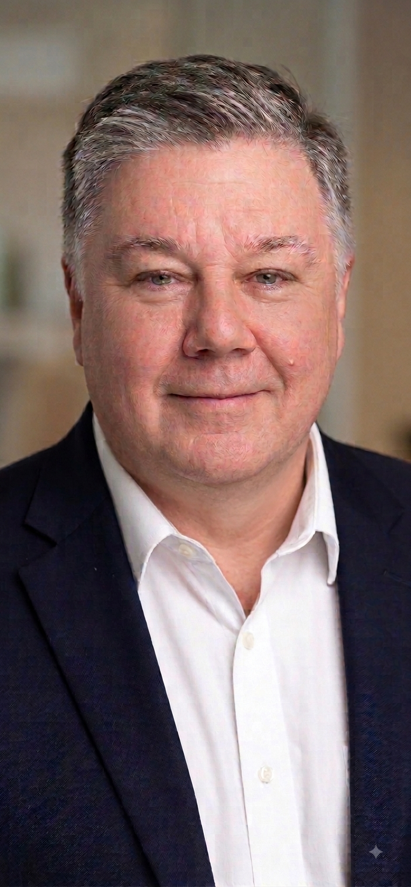

Responsible Growth
Growth must be matched by roads, water, wastewater, drainage, and community services needed to support it.
Read more →Strathroy-Caradoc
For Deputy Mayor of Strathroy-Caradoc

AI-assisted campaign portrait.
About Mark
Strathroy-Caradoc deserves local leadership that listens carefully, asks informed questions, and makes decisions with the community’s long-term interests in mind.
Mark’s campaign is built around transparent government, responsible growth, sound infrastructure planning, and strong protection for taxpayers.
Learn About MarkGood local government means clear information, careful planning, responsible spending, and decisions that put residents first.
Campaign Priorities
Mark is committed to practical ideas that support responsible growth, accountable local government, and a strong future for every part of our municipality.
Growth must be matched by roads, water, wastewater, drainage, and community services needed to support it.
Read more →Municipal spending should be transparent, carefully reviewed, competitively priced where possible, and accountable to residents.
Read more →Residents deserve understandable information about major projects, financial pressures, and Council decisions before it is too late to participate.
Read more →My First 90 Days
If elected, Mark will seek the information needed to understand the municipality’s major files, identify risks early, and support practical action by Council.
View the First 90 Days PlanGet Involved
Stay informed, share your ideas, volunteer your time, or connect with the campaign. Your voice matters.
Connect With the Campaign